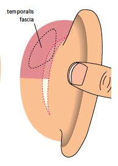
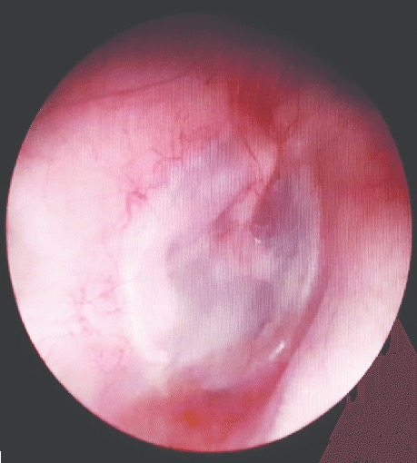
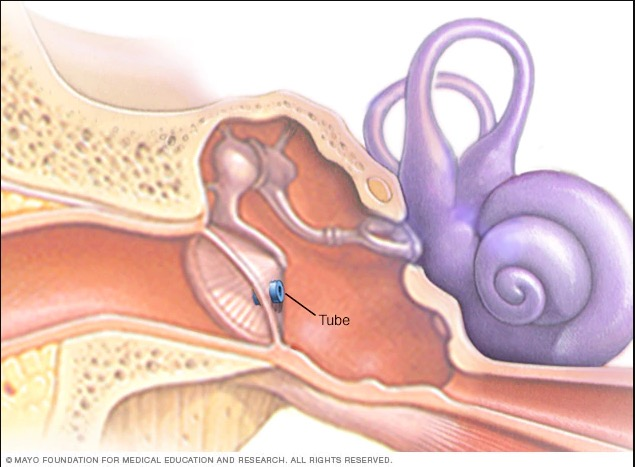
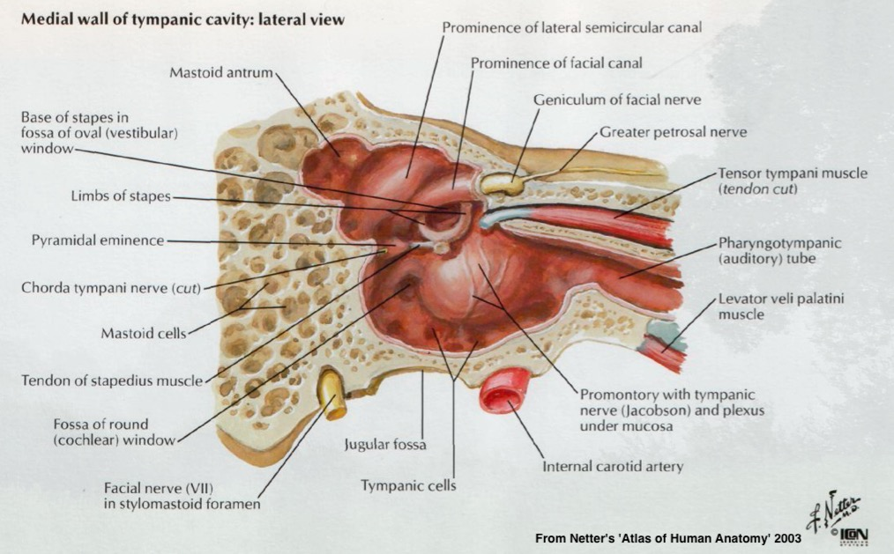
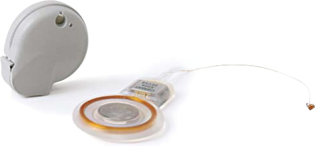
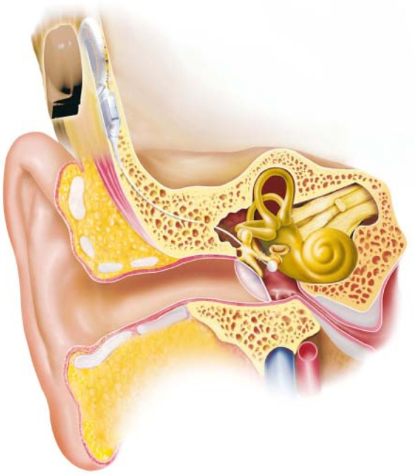
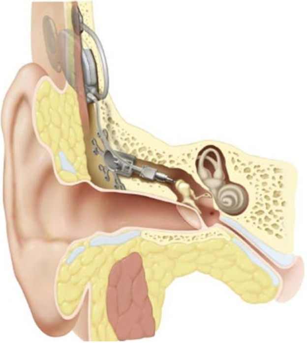
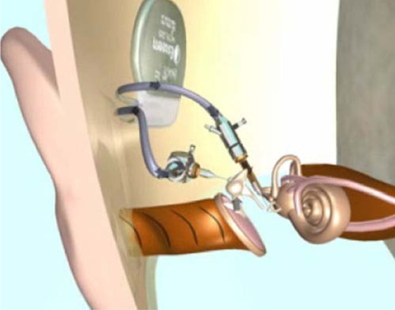

# The Physiology of the Outer and Middle Ear Will Styler - LIGN 113 --- ### Today's Plan - The Tympanic Membrane - The Acoustic Reflex - Conductive vs. Sensorineural Hearing Loss - Middle Ear Implants --- # The Physiology of the Tympanic Membrane --- ### Review: The Tympanic Membrane <img class="r-stretch" src="hearing/tympanic_membrane3.jpg"> --- ### The Tympanic Membrane is complex - Around 0.1mm thick and 10mm in Diameter - Three layers - Outer Cutaneous Layer - Middle Fibrous Layer - Inner mucous membrane --- ### The tympanic membrane can be perforated! <img class="r-stretch" src="hearing/tympanic_perf.jpg"> --- ### This can happen in many ways - Infection - Acute Otitis Media or Externa - Physical Trauma - Q-Tips, Foreign objects, bad wax removal, head trauma - Barotrauma - Explosions, Scuba diving, air travel, or sudden negative pressure --- ### The tear is usually in the Pars Tensa <img class="r-stretch" src="hearing/tympanic_membrane3.jpg"> --- ### This is diagnosed by looking at the TM - Or by measuring pressure changes when you artificially pull a vaccuum in the OE - Or by looking at the amount of sound which is absorbed by the ear - More on these later --- ### The tympanic membrane usually heals itself - It usually heals naturally - [They'll often heal within a month or so](https://www.ncbi.nlm.nih.gov/pubmed/10388876) - [Perhaps nature can be helped!](https://www.nature.com/articles/546S5a) - It can also be fixed surgically --- ### Tympanoplasty <img class="r-stretch" src="hearing/tympanic_perf.jpg"> ---  ---  --- ### Sometimes you perforate the TM on purpose! - Myringotomy is the cutting of the pars tensa to relieve pressure - But sometimes you want it to last! --- ### Tympanostomy <img class="r-stretch" src="hearing/tympanic_tube.jpg"> ---  --- ### Tympanostomy tubes - Simple, outpatient procedure - Children are usually anesthetized for this - Adults power through - Not particularly painful - They fall out on their own in 6-9 months --- ### Tympanostomy Downsides - Insertion is non-fun - You can't swim without earplugs - Liquids can get into the ME - Your ears don't pop - But they don't need to! --- ### So, the TM is magical - And really, really important! - Be kind to your TM! --- # The Acoustic Reflex --- ### Anatomy Review <img class="r-stretch" src="hearing/middleear_netter.jpg"> --- ### Anatomy Review  --- ### The Acoustic Reflex - Also referred to as the 'Stapedius Reflex' - **Causes** a temporary conductive hearing loss - 15-20dB Hearing loss - [There's debate as to whether the Tensor Tympani is involved in humans](https://synapse.koreamed.org/DOIx.php?id=10.11637/kjpa.2015.28.2.63) - Some say it's only the Stapedius muscle! --- ### How does it work? --- ### What triggers it? - Sound >60 dB above the hearing threshold - Different sources have a range of 60-90 dB - Speech also triggers it - Chewing too! --- ### You must have hearing to have an acoustic reflex! - People with severe cochlear hearing loss have no acoustic reflex - Severe conductive loss can reduce/prevent it - Same thing with serious cochlear nerve damage - This means that it's *triggered in the pons, not the ear!* --- ### How long does it take? - 10ms to start, roughly - 100ms+ to reach full tension - Compare to 300 **microseconds** blast from a gunshot - Tension reduces within a few seconds - But there's some role in long term noise exposure - [This is now in use in cars](https://spectrum.ieee.org/cars-that-think/transportation/safety/pink-noise-says-prepare-for-impact) --- ### Why do we care? - It's awesome - It's super diagnostic! - [Check out this paper giving more detail!](https://open.umich.edu/sites/default/files/downloads/acoustic__stapedius__reflexes.pdf) --- <img class="r-stretch" src="hearing/acousticreflexdiagnosis.jpg"> --- ### Speaking of diagnosis - We want to know where hearing loss is coming from --- # Conductive vs. Sensorineural Hearing Loss --- ### Sound has a long path with many points of failure - External **obstructions** - Middle Ear Pathologies - Cochlear Physiology issues - **Different causes of HL get different names!** --- ### Conductive Hearing Loss - Caused by problems between the world and the Oval Window - External obstructions and infections - Fluid, OM, Pressure issues - Tumors in the ME - TM perforations, ossicular dislocations --- ### Sensorineural ('Cochlear') Hearing Loss - Caused by problems beyond the Oval Window - Issues inside the Cochlea - Issues with the hair cells - Issues with other physiological enablers of hearing - Issues with the auditory nerve - Neural issues --- ### These are very different! - Conductive loss is often more treatable medically - Conductive loss can generally be restored to a greater extent - With profound sensorineural loss, nothing else matters - Doesn't matter what the middle ear is doing if nobody's listening - ... but a complete conductive loss is bad news! - The complicated parts are working, but the sound can't get there! --- ### Complete conductive loss is possible - Missing ossicles - Irreparable TM - Missing or scarred-shut ear canals --- ### What can we do to help people with conductive loss? - Hearing aids are one approach - "Make the incoming signal louder" - ... but if we want to get fancy, we can use... --- ## Middle Ear Implants --- ### How can we replace the middle ear? <img class="r-stretch" src="hearing/middleear_netter.jpg"> --- ### Let's vibrate the cochlear fluid ourselves! --- ### Some devices vibrate the Ossicles or Round Window - 'Soundbridge' - 'Otologics' ---  ---  ---  --- ### Some devices vibrate the skull - The 'Baha' device --- <img class="r-stretch" src="hearing/middle_ear_implant3.jpg"> --- ### The Envoy Esteem - "Let's use the TM as a microphone, and then vibrate the stapes" ---  --- ### Middle Ear Implants - Offer some increased convenience relative to hearing aids - Don't look like hearing aids - Can work where there are no ossicles or TM or ear canal - Offer another choice for **conductive** hearing loss --- ### Wrapping Up - The Tympanic Membrane is awesome, and you want it intact - The Acoustic reflex is awesome, but it won't save you - Conductive and Sensorineural Hearing Loss are different - Middle Ear Implants are *really cool* --- ### Next time - We'll think more about the OHCs and the Cochlear Amplifier --- <huge>Thank you!</huge>